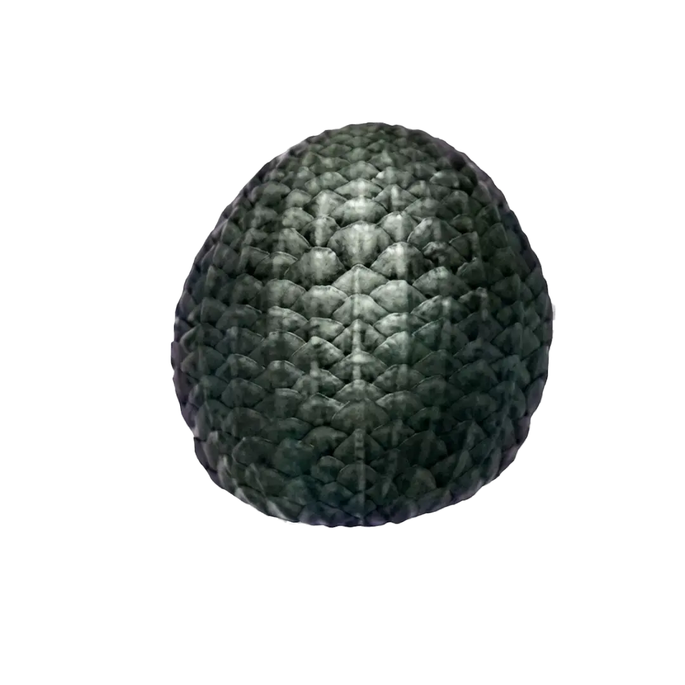
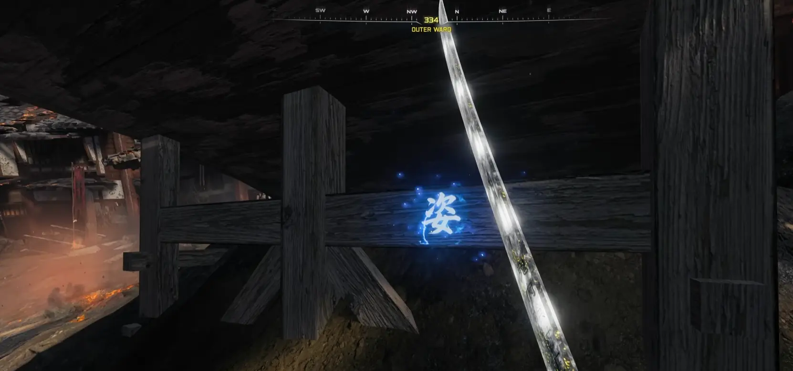

Aby w ogóle móc aktywować to zadanie, musisz grać w trybie Klątwa na poziomie Tier 2 lub wyższym. Gorąco polecam Tier 3, żeby mieć dostęp do 4. poziomu ulepszenia w maszynie Pack-a-Punch – bez tego boss Was zmiecie.

Z naładowaną kataną musisz uderzyć trzy ukryte symbole. Znajdziesz je w:
Wskazówka: Uderzaj najpierw te symbole, które mają wokół siebie elektryczną aurę. Gdy uderzysz poprawnie, zmienią kolor na czerwony.

Po aktywacji symboli usłyszysz śmiech królika i w Onsen Baths (Łaźnie) pojawi się portal. Czeka Cię tam 6 morderczych fal:
Uwaga: Masz na to tylko 10 minut! Jeśli czas się skończy, będziesz otrzymywać coraz większe obrażenia, aż padniesz.